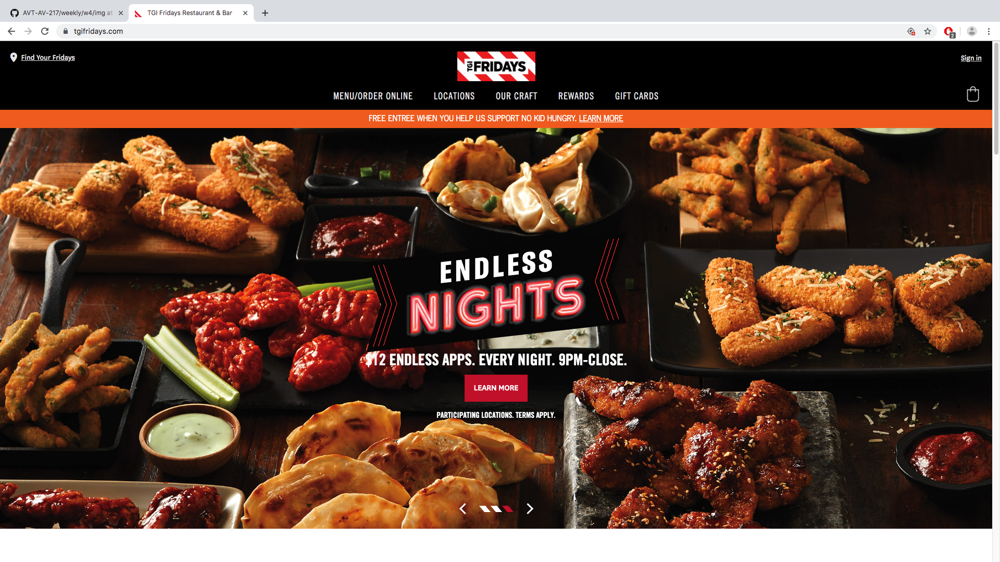
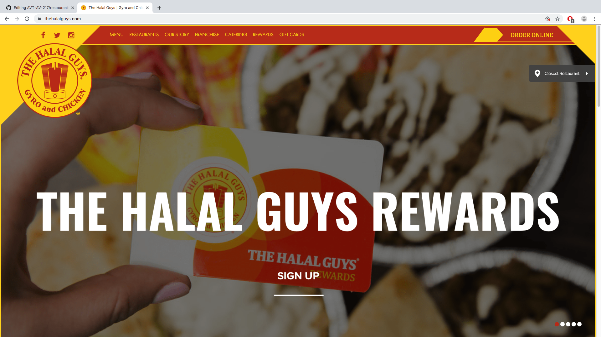

This site is very effective because it is able to show their product in the background while being able to have a clear direction of content (especially concerning navigation and other relevant info). The information besides the photo is close enough in proximity to not cause the user to roam and search around for the information. It uses the whole layout of the desktop well and translates well into mobile. The logo and name are very responsive and work well with different screen sizes, though the background image is less so. However, it is still getting their message across in a good manner.

The organization of the page is superb; it makes great use of the box format considering the header and navigation, body, footer, and other parts of the structure. The images are very high quality and portray aspects of the restaurant without having to go seraching for the content. As well, the about me section is simply in the home page which again, saves the users from having to search what can be found at this restaurant. The content makes great use of the space and is very responsive to changes in screen size. The overall theme works well and I could believe that this is authentic korean cuisine.

Though not necessarily a restaurant, there are restaurant properities of this franchies which is why I put it on this list. It is a very family friendly kind of food establishment, and it translate well with their consistent theme of smiles and family friendly colors (the green/pink coordination). Again, this was very good at using the box structure in highlighting parts of the page whilst making good use of the space in the page. What is really done well is that some boxes span the lenngth of the page and some don't immediately show that, since it is blank space. It renders as effective because the written content is centered well and it can be very responsive.
This site uses a similar theme to Iron Age and Marumen, where it covers the span of the entire page with content. It is also centered similarly as menchies website (where the content aligns in the center). The overall theme translates well as the color pallete of their choosing matches even the food choices color pallete (mainly black/orange). There is very user friendly navigation to a lot of things, including contact information; other social media sites; and other information related to the restaurant. There is also a nice use of custom shapes/borders to help bring together the overall theme of the site.
This webise is very effective in layout written content so it's very visible, essentially right in the face of whoever is looking at it. The layout is very simple but it shows a lot of relevant information on the main page including easy navigation and links to other social media sites. The site has scroll feature for the first photos and that helps to create a loop of informtion for the user to keep looking at.